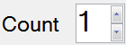

A cycle can be played multiple times. To define the number of cycle repetitions, simply change the value ‘Count’ prior to launch the cycle.

Alternatively, a cycle can be played in definitively by checking the box ‘Infinite play’  . In that case, cycle will be played and repeated until the ‘Stop’ button
. In that case, cycle will be played and repeated until the ‘Stop’ button  is clicked.
is clicked.
Created with the Personal Edition of HelpNDoc: Free help authoring tool